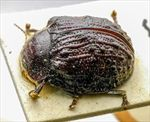
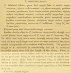

Click on images to enlarge

Paropsis montuosa type specimen, lateral view

Paropsis montuosa type specimen,oblique view
{kind=link}

Paropsis montuosa type specimen, dorsal view
{kind=link}

Paropsis montuosa, description
Name
Trachymela montuosa (Blackburn, 1896)
Type specimen
Location: BMNH
Label data: “Type” (red-bordered circle), “4588 T. A7” (on card with insect), “Blackburn coll. 1910-236.”, “Paropsis montuosa, Blackb.”,
Carded, the implication from Blackburn's description is that it is a male; size: 8.15 x 6.4 x 3.8 mm; A-A: not measurable (due to glue from card), HCE/BL = 20.5% (approx, obtained from measurement of lateral view of specimen photo).
Looks like a version of baldiensis with a much rougher surface texture. The area around elytral summit is not noticeably smooth.
Original description
[Original description shown in figure, translated from Latin using ChatGPT, 03/2026]
Allied to P. baldiensis; broader than that species and much more convex; elytra reddish-brown, scarcely variegated with pitchy colouring; legs dark; disc of the prothorax more densely punctulate; elytra anteriorly distinctly costate, furnished with much larger verrucae (of the same colour as the surface), the marginal portion less strongly directed outward; abdomen more densely and more strongly punctulate; in other respects as in P. baldiensis.
Length 3⅗ lines (~7.6 mm); width 3 lines (approximately).
Notes
Blackburn (1896) deals with P. montuosa as part of his subgroup ii (i.e., those species without "strongly marked characters", whose greatest height is not or scarcely in front of the middle of the elytral margin and whose elytra are depressed under the humeral callus). Within that group, he characterises it as:
(1) inner edge of humeral callus distinctly nearer to lateral margin of elytra than to suture;
(2) sides of prothorax more or less explanate;
(3) elytra not having well-defined continuous costae;
(4) puncturation of the elytra not particularly fine;
(5) upper surface (including verrucae, which are very large) red or brown;
(6) prothorax not much narrowed in front, widest at the middle.
This is almost certainly Ta05. The description is a very good fit for that species and the length of the type and its estimated HCE/BL value is well within the normal range.
References
Blackburn, T. 1896, "Revision of the genus Paropsis. Part I", Proceedings of the Linnean Society of New South Wales, vol. 21, no. 4, 637-693 (page 663).
Copyright © 2026. All rights reserved.